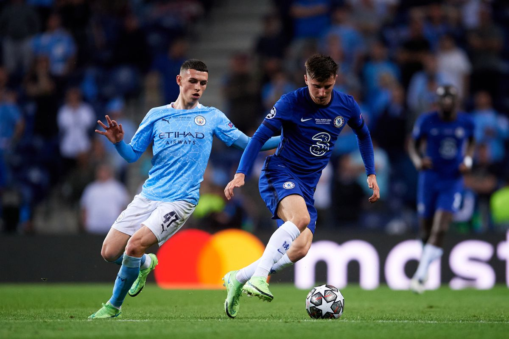

Final Score: Manchester City 1 - 0 Chelsea
It took until Kevin De Bruyne’s stunning strike in the 70th minute to give the Cityzens all three points, but Manchester City maintained control over Chelsea for the vast majority of the game. A lack of composure let down the Blues for the few chances that came their way.
1. Title race over?
Manchester City have won twelve Premier League matches in a row, including casualties to Manchester United; West Ham; a new look, in form Arsenal; and now the League’s second best competitor. With the latest result their lead at the top extends to a massive 13 points.
To be fair to Liverpool, they currently have two games in hand, but their 0-0 draw to a 10-man Arsenal in the League Cup already displayed how the absences of Mané and Salah will leave their attack weakened until they return from the African Cup of Nations in February.
Despite controlling most of the game, City weren’t at their best today, and they still got the best result possible. With their biggest rivals missing key men across the pitch, it’s hard to see the Sky Blues throwing away the title now.
2. Chelsea lacked creativity
With Pulisic and Ziyech tasked with providing for Lukaku, the latter looked to be the one to run the show, but he failed. Chelsea’s clearest chances came through the Lukaku-Ziyech pairing and both occasions were squandered by poor play from the former Ajax man. When the Blues got the ball they offered little to nothing going forward. Laporte error aside, the French center back and his partner John Stones had a regular day in the office dispatching Chelsea’s star-studded attack.
Yes, Chelsea does have a lengthy injury list, namedly the attacking full backs Reece James and Ben Chilwell, but they still had stars such as Havertz, Mount, and Hudson-Odoi on the bench. Tuchel did substitute on the latter two in the 81st and 69th minutes respectively, but it was far too late in the match for them to make a difference.

3. City still need a striker
With 56% possession, City’s 9 corners, 11 shots, and 17 crosses (to Chelsea’s 1, 4, and 11 respectively) should have resulted in the game being won by more than De Bruyne’s beauty from outside of the box. Their crosses were often unmet in the box and many of their shots looked desperate compared to their typical tap-ins after strolling through an opponent’s back four. One would think that having a strong target man up front might be just what the Cityzens need to put these dominant performances against top opposition to bed. The likes of Erling Haaland, Dusan Vlahovic, and maybe even Robert Lewandowksi will be available this summer — it would be unwise of City to not invest.
4. Chelsea need to keep Rüdiger
City held the ball for long periods, but often struggled to penetrate Chelsea’s stubborn back line, however Malang Sarr had a few shaky moments and Thiago Silva is approaching his 40s. If Rüdiger leaves in the summer, neither of those two are guaranteed to be fitting partners to an already inconsistent-at-times Andreas Christensen. The lanky German is in his peak years and Chelsea should do everything in their power to get him to resign on the dotted line if they want to reattempt a serious title charge next season.
5. Grealish may not bloom until next season
When Atonio Rüdiger empties his pockets at home he’ll find his wallet, phone, keys, and Jack Grealish. With Riyad Mahrez currently on duty with Algeria in the African Cup of Nations, this was the large-calfed Englishman’s opportunity to make a statement against a big side. But he struggled once again. Good chances weren’t frequent in this game, but Grealish had City’s best one when he failed to lift the ball over Kepa in a one versus one situation.
Yes, he does receive more hate than he deserves, but it is about time that everyone understands that it’s difficult to play in one of Pep’s sides, especially when coming from a team in which you’re the main man. Grealish’s time will come, but he needs more time to learn and adapt, and that may very likely take until the 2022/23 season.